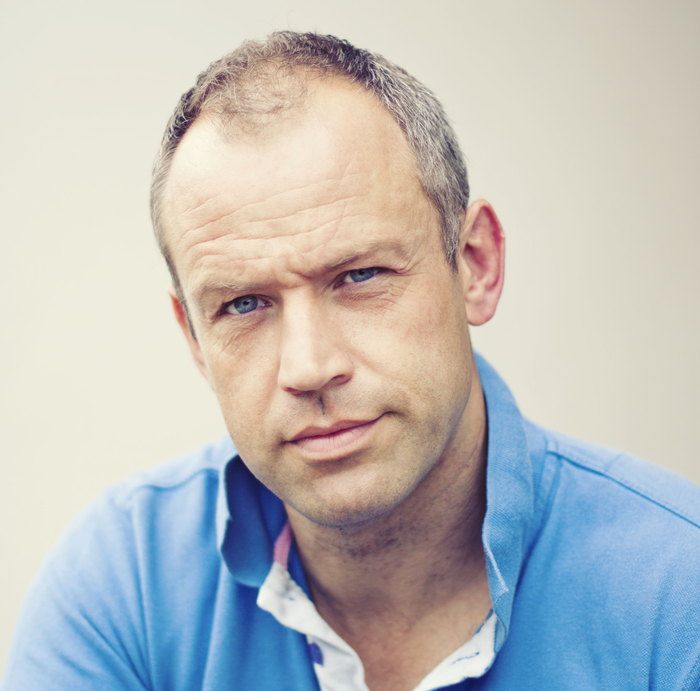

SnugA novel by Anthony Monaghan
A final refuge by the sea.
Thank you for reading the opening chapters of Snug. I hope Charlie’s voice—and the pull of the North Sea—have stayed with you. The complete manuscript is available on request.
Request the full manuscript